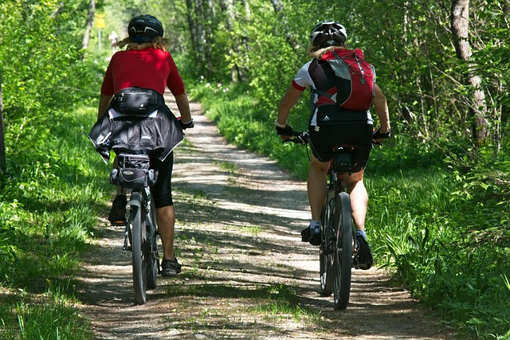

💡 Use Lights and Reflectors

Lights and reflective materials can help cyclists become more visible, especially when riding in low-light conditions.
Ride Carefully and Maintain Your Bicycle
Bicycle safety helps protect riders and other road users. Cyclists should understand traffic rules and remain alert whenever they are riding.
Wearing appropriate protective equipment and maintaining the bicycle can also help make cycling safer.

A properly fitted helmet can provide protection for the head during a crash. Riders should make sure that their helmet fits correctly before riding.
Lights and reflective materials can help cyclists become more visible, especially when riding in low-light conditions.

Regularly check the tyres, brakes, chain, pedals and other important bicycle parts.
A bicycle that is properly maintained can be more reliable during a ride.
| Part | What to Check |
|---|---|
| Tyres | Check the air pressure and condition |
| Brakes | Make sure they work properly |
| Chain | Keep it clean and properly lubricated |
| Lights | Make sure they are working |
Stay alert, respect other road users and follow the traffic rules whenever you ride.